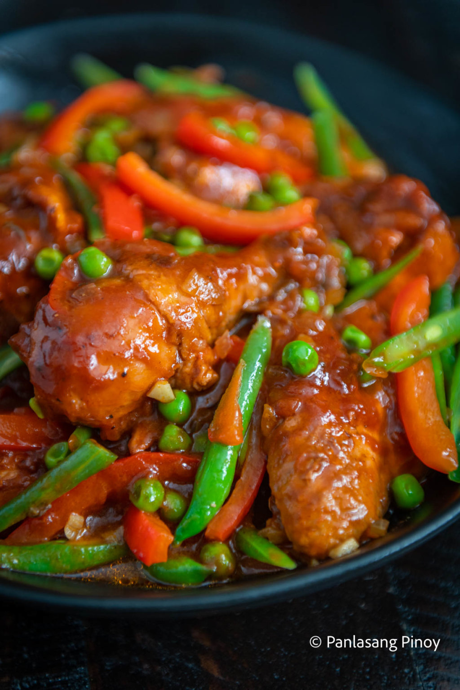
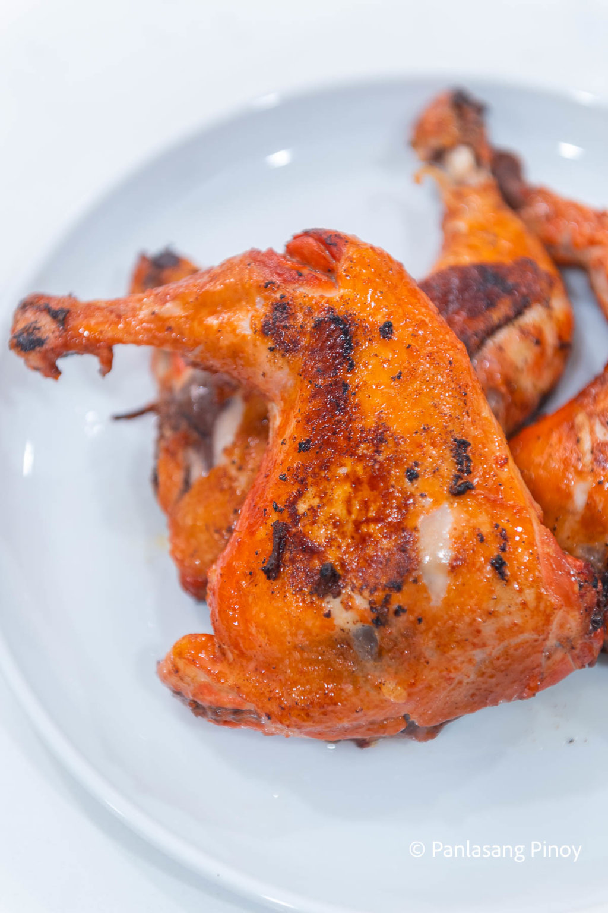
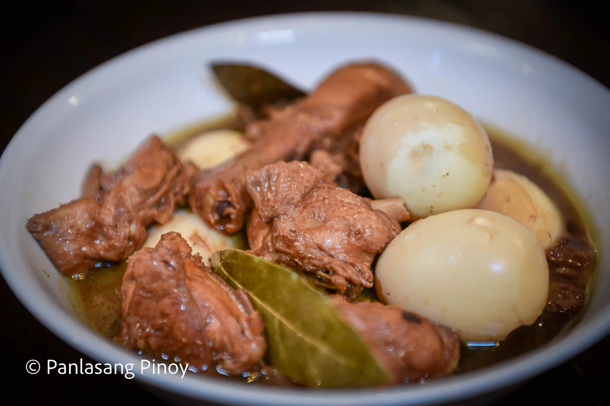
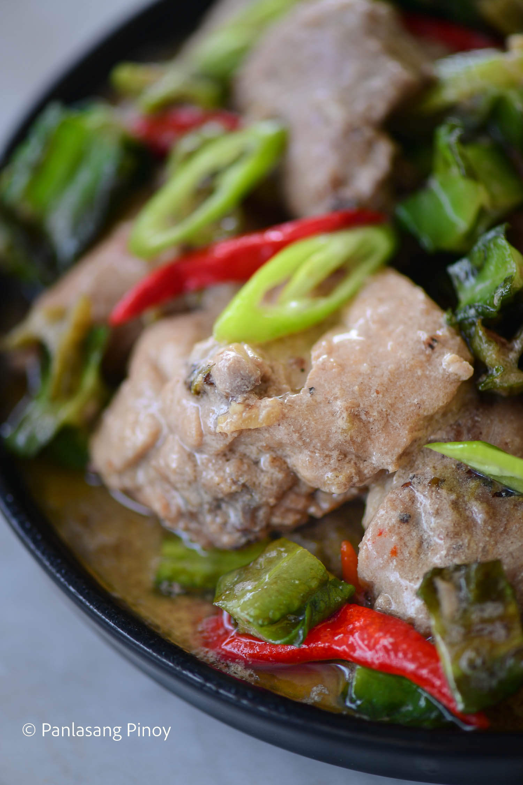
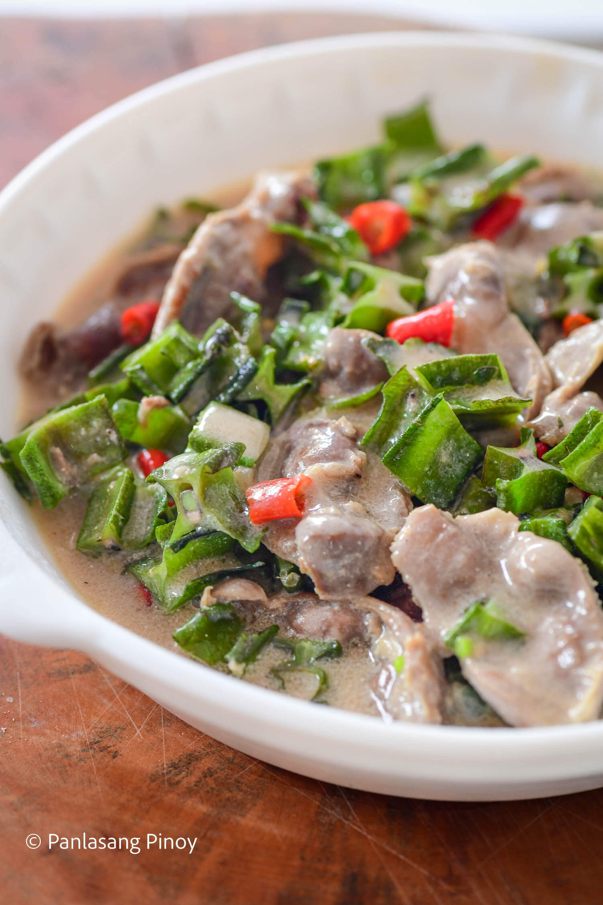
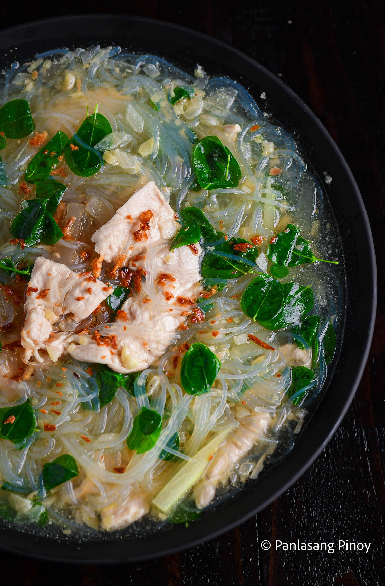
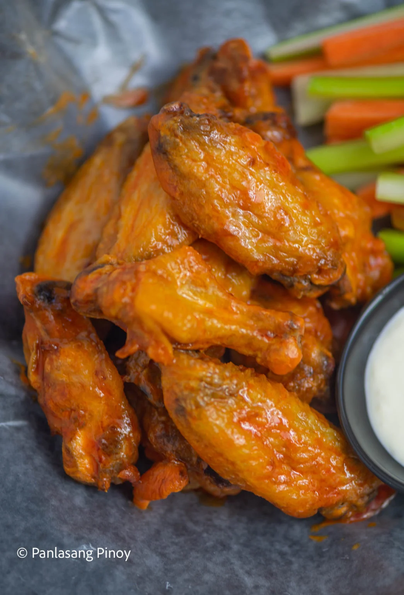
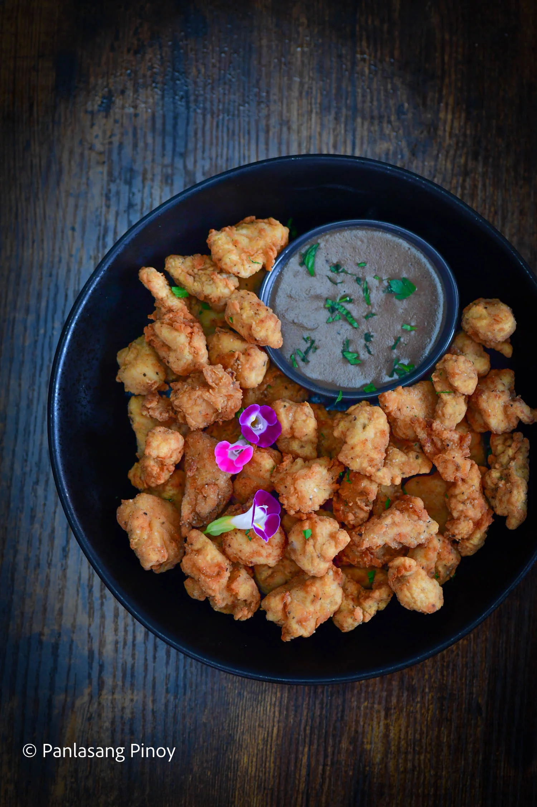

Pat chicken dry with a paper towel and arrange on a roasting pan.
Crush the garlic and rosemary using a mortar and pestle tool until the texture becomes paste-like.
Make the compound butter by mashing the butter using a fork. Add the garlic and rosemary paste and season with Knorr Liquid Seasoning. Mix well. Set aside.
Place the chicken on a clean cast iron pan or a baking tray.
Loose the skin from the meat by sliding your fingers between the meat and the skin. Spread the compound butter between the meat and skin of the chicken. Put the remaining butter inside the cavity.
Squeeze lemon all over the chicken and sprinkle salt and ground black pepper. Stuff the lemon peel inside the cavity.
Put the chicken inside the oven and bake for 20 minutes. Lower the temperature to 350F and continue baking until the internal temperature reaches 165F (it took me 50 minutes for this step, total baking time is 70 minutes).
Remove the chicken from the oven. Cover with aluminum foil and let the chicken rest for 20 minutes.
Cook Time : 1 hour 10 minutes
Transfer to a serving bowl. Serve and enjoy!
Pinoy Chicken Curry Recipe
Ingredients
2 lbs. chicken cut into serving pieces
1 tablespoon curry powder
1 piece potato cubed
4 cloves garlic minced
2 stalks celery sliced
1 piece red bell pepper sliced
1 piece onion chopped
2 thumbs ginger cut into strips
2 cups coconut milk
1/2 cup all-purpose cream optional
1 cup water
fish sauce and ground black pepper to taste
Instructions
Heat oil in a pan. Fry potato for 1 minute per side. Remove from the pan. Set aside.
Using the remaining oil, saute garlic, onion, celery, and ginger until onion softens.
Add the chicken pieces. Saute until the outer part of the chicken turns light brown.
Add 1 tablespoon fish sauce. Continue sautéing for 1 minute.
Pour-in coconut milk and water. Let boil.
Add curry powder. Stir until the powder is completely diluted. Cover the pot and continue cooking between low to medium heat until the liquid reduces to half.
Add the red bell pepper and pan fried-potato. Cook for 5 minutes.
Season with fish sauce and ground black pepper as needed. You can also add all-purpose cream if desired.
Cook Time : 1 hour
Transfer to a serving bowl. Serve and enjoy!

Sinarsang Manok Recipe
Ingredients
1 ½ lbs. chicken cut into serving pieces
1 piece bell pepper Julienne
1 piece Knorr Chicken Cube
½ cup green peas
6 pieces long green beans sliced
1 piece onion chopped
3 cloves garlic chopped
1 piece tomato diced
3 tablespoons soy sauce
8 ounces tomato sauce
1 ½ cups water
½ cup tomato ketchup
½ teaspoon white sugar
Salt and ground black pepper to taste
¼ cup cooking oil
Instructions
Heat 2 tablespoons of oil in a pan. Sauté the bell pepper, green peas, and long green beans for 45 seconds. Remove from the pan and set aside.
Add remaining oil. Once oil becomes hot, pan-fry chicken pieces for 3 minutes per side. Remove chicken from the pan and place on a clean plate. Set aside.
Sauté garlic, onion, and tomato using the remaining oil. Add soy sauce, tomato sauce, and water once the onion softens. Let it boil.
Add Knorr chicken cube and then put the chicken piece back into the pan. Cover the pan and continue cooking the chicken using medium heat for 15 minutes. Remove the cover and cook until the sauce becomes thick.
Add back the stir-fried vegetables.
Season with sugar, salt, and ground black pepper. Transfer to a serving plate. Serve!
Cook Time : 47 minutes
Transfer to a serving bowl. Serve and enjoy!

Ketchup Fried Chicken Recipe
Ingredients
3 pieces chicken leg quarters
5 tablespoons soy sauce
5 tablespoons white vinegar
3 pieces dried bay leaves
2 teaspoons whole peppercorn
5 cloves garlic crushed
2 cups lemon lime soda
1 cup banana ketchup
1 cup cooking oil
Instructions
Combine all the ingredients in a cooking pot, except for the oil. Stir until well blended. Cover the pot and let the liquid boil. Adjust heat between low to medium. Continue boiling for 10 minutes.
Turn the chicken over. Continue boiling the opposite for another 10 minutes while leaving the pot uncovered.
Remove chicken and let it cool down. Save the remaining liquid as a sauce.
Rub salt all over the chicken. Let it air dry for 30 minutes.
Heat oil in a pan. Fry the chicken on medium heat until brown. Turn the chicken over and do the same to the other side.
Remove chicken from the pan. Arrange on a serving plate. Serve with rice and ketchup sauce (remaining liquid used to boil the chicken). Share and enjoy!
Cook Time : 35 minutes
Transfer to a serving bowl. Serve and enjoy!

Perfect Chicken Adobo on a Budget
Ingredients
2 lbs. chicken cut into serving pieces
1 Knorr Chicken Cube
5 eggs medium size
¼ cup soy sauce
¼ cup vinegar
1 cup water
3 bay leaves
2 teaspoons whole peppercorn
8 cloves garlic crushed
1 teaspoon sugar
3 tablespoons cooking oil
Instructions
Combine chicken, soy sauce, vinegar, and 5 cloves garlic. Mix well until all ingredients are well incorporated. Marinate for 30 minutes.
Meanwhile, boil the eggs for 10 minutes. Let the eggs cool down afterwards and peel off the shell.
Heat oil in a pan. sauté the remaining garlic until it starts to turn brown.
Add the marinated chicken (do not include the marinade yet). Cook for 3 minutes.
Pour the remaining marinade into the pan and add water. Let boil.
Add bay leaves, whole peppercorn, and Knorr Chicken Cube. Stir. Cover the pan and continue cooking using low to medium heat for 15 to 20 minutes.
Add the sugar and put the eggs into the pan. Gently stir. Cook for 2 minutes.
Transfer to a serving plate and serve along with a huge bowl of newly cooked rice.
Cook Time : 30 minutes
Share and enjoy!

Chicken Gising-gising
Ingredients
2 lbs. chicken cut into serving pieces
90 grams Knorr Ginataang Gulay Mix
½ lb. winged bean sigarilyas, sliced
2 long green chili pepper sliced
5 Thai chili pepper optional
1 tablespoon shrimp paste
3 cups water
1 onion chopped
5 cloves garlic chopped
2 thumbs ginger chopped
3 tablespoons cooking oil
Instructions
Heat oil in a pan. Sauté garlic, onion, and ginger.
Add chicken pieces. Stir fry until the exterior turns light brown in color.
Add 1 cup water. Let boil.
Combine Knorr Ginataang Gulay Mix with 2 cups water. Mix well and then pour into the pan. Cover and continue cooking between low to medium heat setting for 20 minutes.
Add shrimp paste, long green pepper, and winged beans. Cover the pan and continue cooking for 5 minutes.
Add Thai chili peppers if desired. Cook for 2 minutes more.
Transfer to a serving bowl. Serve hot with rice.
Share and enjoy!
Cook Time : 35 minutes
Transfer to a serving bowl. Serve and enjoy!

Pinoy Chicken Curry Recipe
Ingredients
1 lb. chicken gizzard
40 g Knorr Ginataang Gulay Mix
3 cups winged bean sigarilyas, sliced
3 Thai chili pepper chopped
1 onion diced
3 cloves garlic crushed
1 tablespoon shrimp paste bagoong alamang
Ground black pepper to taste
2 cups water
3 tablespoons cooking oil
Instructions
Boil the chicken gizzard until tender. Set aside.
Heat oil in a pan. Sauté the garlic until it starts to brown. Add onion. Cook until it softens.
Put the boiled gizzards into the pan and sauté for 2 minutes.
Add shrimp paste and chili pepper. Stir.
Pour the water into the pan. Let it boil.
Add Knorr Ginataang Gulay Mix. Stir until well blended. Cover the pan and reduce the heat to low setting. Cook for 8 to 10 minutes.
Add winged beans. Stir and cook for 5 minutes.
Season with ground black pepper.
Transfer to a serving plate. Serve hot.
Share and enjoy!
Cook Time : 1 hour
Transfer to a serving bowl. Serve and enjoy!

Chicken Sotanghon Tinola Recipe
Ingredients
8 ounces boneless chicken breast
5 ounces sotanghon noodles
1 Knorr Chicken Cube
6 ounces green papaya sliced
1 cup malunggay leaves
4 cloves garlic chopped
1 onion chopped
3 thumbs ginger minced
2 tablespoons cooking oil
6 cups rice wash hugas bigas
Patis and ground black pepper to taste/li>
Instructions
Saute garlic, onion, and ginger.
Add chicken once the onion softens. Cook until the outer layer of the chicken turns light brown.
Pour water. Let boil. Add Knorr Chicken Cube. Cover the pot and boil in low to medium heat for 15 minutes.
Add papaya and sotanghon. Cook for 5 minutes.
Add malunggay leaves.
Season with ground black pepper and patis. Finish by adding toasted garlic.
Transfer to a serving bowl. Serve hot. Share and enjoy.
Cook Time : 4 minutes
Transfer to a serving bowl. Serve and enjoy!

Original Buffalo Chicken Wings
Ingredients
2 lbs chicken wings
5 Tablespoons unsalted butter
1/2 cup Frank's RedHot sauce
Instructions
Divide the wings into 3 parts. Separate the drumette from the wingette. Cut off the wingtip and set aside. Note: we'll only be using the big parts.
Pat the wings dry with paper towel and arrange inside an air fryer. Air fry one side for 12 minutes at 350F. Do the same with the opposite side.
Make the sauce by melting butter in a microwave oven. Add the hot sauce and stir until well blended.
Soak chicken wings in the sauce. Make sure that each piece is fully coated.
Serve with ranch dressing, carrots, and celery. Share and enjoy!
Cook Time29 minutes
Transfer to a serving bowl. Serve and enjoy!

KFC Style Popcorn Chicken with Gravy
Ingredients
1 lb. boneless chicken breast cubed
1 cup cooking oil
Marinade ingredients:
1 cup buttermilk
1 tablespoon Knorr Liquid Seasoning
Breading ingredients:
1 cup all-purpose flour
1/4 teaspoon salt
1/4 teaspoon thyme
1/4 teaspoon basil
1/4 teaspoon oregano
1/2 teaspoon celery salt
1/2 teaspoon ground black pepper
1/2 teaspoon dried mustard
2 teaspoons paprika
1 teaspoon garlic salt
1/2 teaspoon ground ginger
1 1/2 teaspoons white pepper
Gravy ingredients:
1 Knorr Chicken Cube
1/4 cup all-purpose flour
1/4 cup butter
2 cups water
1/4 teaspoon onion powder
1/4 teaspoon garlic powder
Salt and ground black pepper to taste
Instructions
Start making the popcorn chicken by combining buttermilk and Knorr Liquid seasoning in a mixing bowl. Stir until blended. Add the cubed chicken breast. Marinate for at least 1 hour.
Meanwhile, make the gravy by melting the butter in a saucepan. Wait for it to bubble and then gradually add the flour while stirring once the bubbles subside. Continue cooking and stirring until the mixture turns medium brown in color. Gradually add water. Stir until the mixture becomes smooth. Add Knorr Chicken Cube, garlic powder, onion powder, salt, and ground black pepper. Stir and set aside. Cover the pot to keep the gravy warm.
Continue working on the popcorn chicken by combining all the breading ingredients in a bowl. Mix well.
Heat the oil in a small cooking pot.
Dredge the marinated chicken in the breading mixture making sure that it is completely coated. Shake off excess breading.
Deep fry the breaded chicken for 3 to 4 minutes or until it turns golden brown.
Cook Time : 15 minutes
Serve with your favorite side dish and gravy. Share and enjoy!